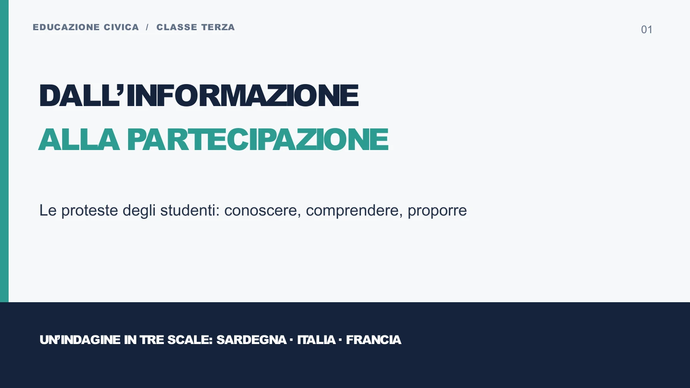
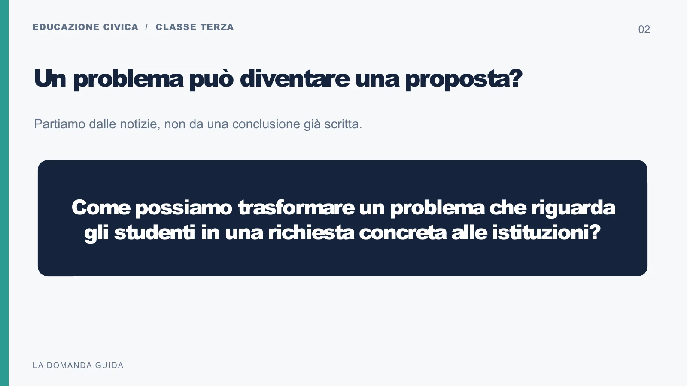
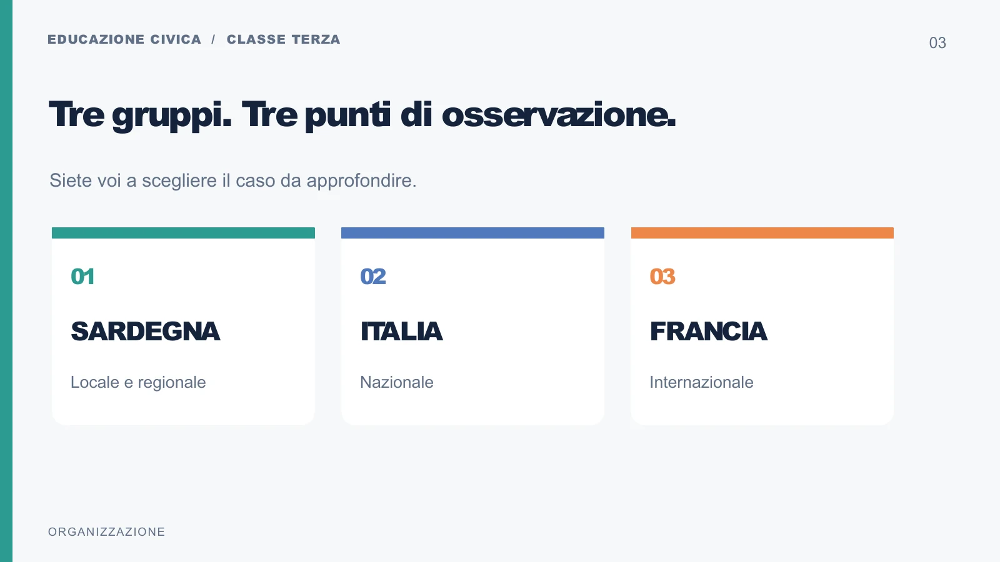
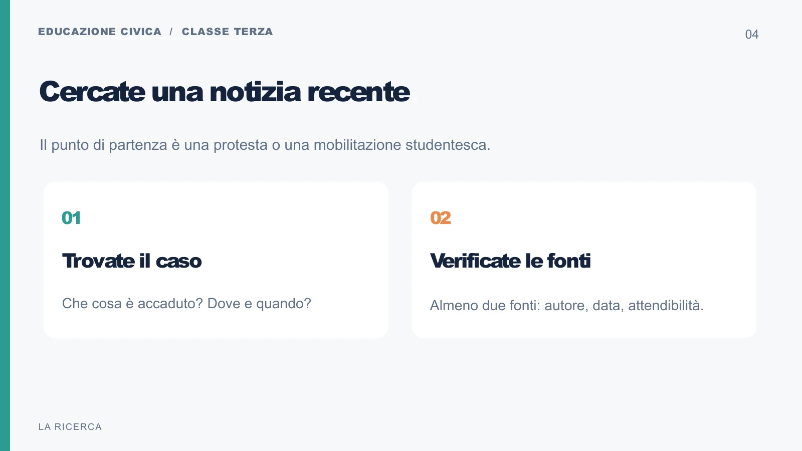
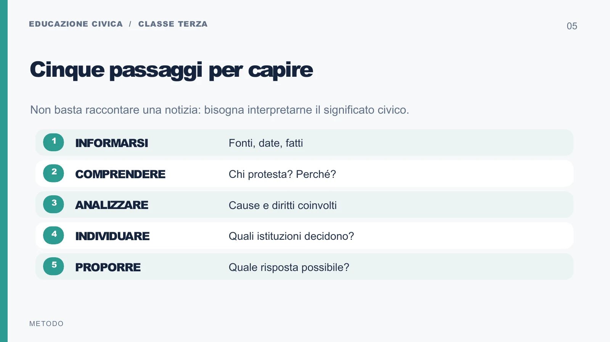
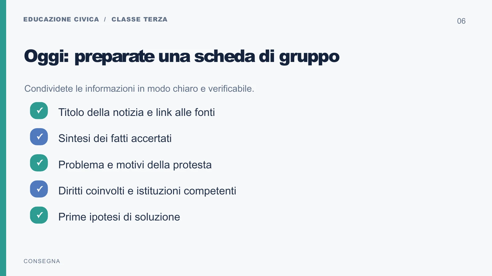
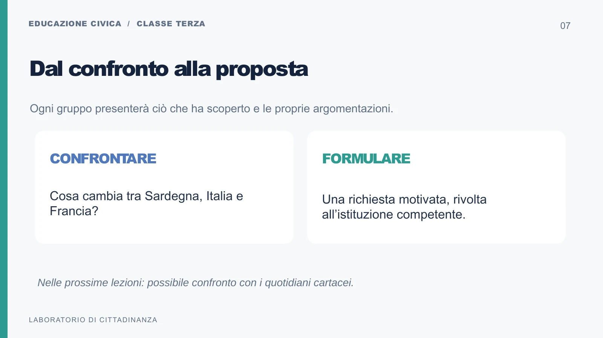
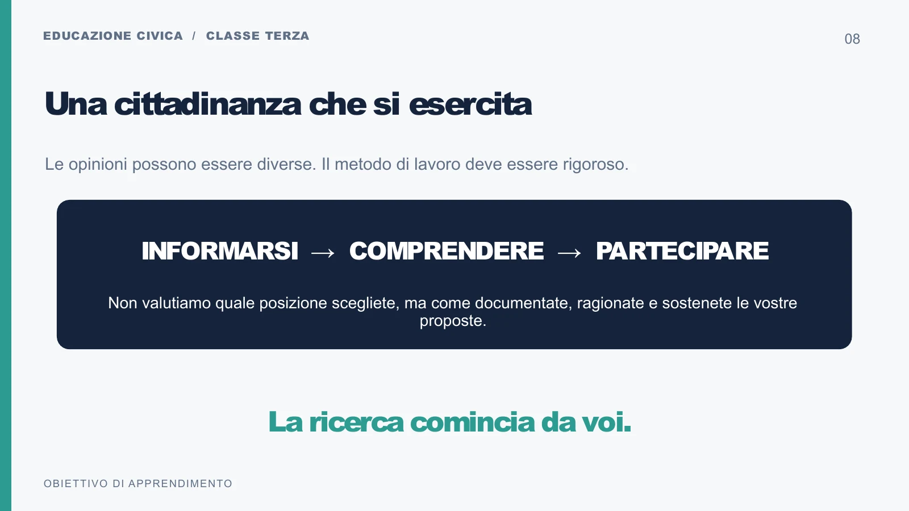

Sardegna
Scala locale o regionale. Cercate una mobilitazione studentesca nel territorio sardo e scegliete il problema da approfondire.
Metodologie Operative · IIS Meucci - Mattei | Decimomannu
Educazione civica · Classe terza
Le proteste studentesche: conoscere, comprendere, proporre.
Indirizzo Servizi per la Sanità e l’Assistenza Sociale
Disciplina: Metodologie Operative
La domanda guida
Come può un disagio vissuto da studenti o cittadini diventare un problema pubblico, documentato e presentato alle istituzioni competenti?
Dalla discussione all’indagine
Nella lezione introduttiva abbiamo letto e discusso notizie di giornale, partendo da scioperi e mobilitazioni recenti. Abbiamo individuato problemi e provato a collocarli nella loro dimensione sociale, critica e politico-istituzionale. Ora trasformiamo quella discussione in una ricerca verificabile e in un esercizio di cittadinanza attiva.
Una protesta rende visibile una richiesta, ma il titolo di un articolo non basta a spiegarla. Occorre ricostruire che cosa è successo, ascoltare le ragioni riportate, distinguere i fatti dalle interpretazioni e capire chi può intervenire. Un’opinione può essere discussa e motivata; un’affermazione su un fatto deve poter essere controllata.
Il caso lo scegliete voi. Non c’è una conclusione già scritta da confermare. Il docente assegna la scala geografica, il metodo e i criteri; ogni gruppo individua le notizie, seleziona il caso e costruisce la propria proposta. Non è richiesta adesione a una protesta o a una posizione politica.
Per il futuro operatore sociale. Riconoscere un bisogno, documentare un problema, individuare soggetti e risorse e motivare una risposta sono passaggi del lavoro nei servizi alla persona. Qui li esercitiamo su un problema pubblico: ascoltare una richiesta non significa dare subito per certa ogni sua spiegazione.
Organizzazione della classe
Scala locale o regionale. Cercate una mobilitazione studentesca nel territorio sardo e scegliete il problema da approfondire.
Scala nazionale. Individuate una mobilitazione studentesca italiana e ricostruite la questione di portata nazionale che solleva.
Scala internazionale. Cercate un caso francese, controllando il significato delle parole e le funzioni delle istituzioni coinvolte.
Nel gruppo distribuite quattro ruoli: ricercatore delle fonti, analista del problema, referente istituzionale, redattore e portavoce. Adattateli al numero dei componenti, accorpandoli o condividendoli. Tutti devono leggere le fonti e saper motivare la proposta finale.
Per la Francia potete usare strumenti di traduzione come supporto: conservate il collegamento al testo originale e controllate le parole decisive. Un nome simile a quello di un ente italiano non garantisce che svolga la stessa funzione.
Ora 1
Ricerca web e confronto delle fonti.
Esito: caso scelto e almeno due fonti motivate.
Ora 2
Fatti, interessi, bisogni e diritti.
Esito: scheda di gruppo documentata.
Ora 3
Competenze istituzionali e confronto tra le scale.
Esito: destinatario scelto con una prova della sua competenza.
Ora 4
Redazione della proposta e restituzione orale breve.
Esito: dossier e istanza argomentata.
I tempi sono orientativi. Il percorso può ampliarsi a 6–8 ore per il confronto tra gruppi, la lettura della carta stampata e la revisione delle proposte.
La ricerca autonoma
Cercate online una protesta o mobilitazione studentesca recente relativa alla scala assegnata. Scegliete il caso perché permette di riconoscere un problema e di verificarne le informazioni, non soltanto perché il titolo colpisce. Se la notizia è poco attendibile o non riguarda realmente studenti e scuola, motivate la decisione di cambiarla.
Confrontate almeno due fonti giornalistiche identificabili, datate e confrontabili. Per ciascuna annotate titolo, testata o ente, autore o redazione, data di pubblicazione ed eventuale aggiornamento, collegamento e data di consultazione. Cercate anche una fonte istituzionale per verificare la competenza dell’ente a cui pensate di rivolgervi.
Controllate se le testate hanno raccolto informazioni proprie oppure riprendono lo stesso comunicato o la stessa agenzia: due siti che copiano la medesima notizia non offrono due conferme indipendenti. Un comunicato degli organizzatori documenta ciò che dichiarano; da solo non dimostra ogni fatto dichiarato.
Confronto delle fonti: quali fatti coincidono? Quali differiscono? Sono citati documenti, dati o testimonianze? Il titolo corrisponde al testo? La foto riguarda quel luogo e quella data? Che cosa resta senza conferma? Se un articolo non è accessibile, cercate un’altra fonte consultabile.
Ricostruite che cosa, dove, quando, chi e perché. Scrivete una sintesi dei fatti verificati entro 120 parole. Attribuite le dichiarazioni a chi le ha pronunciate e tenete separati gli eventi riferiti, le opinioni e le rivendicazioni.
In parole semplici. Un fatto è qualcosa di cui cercate riscontro; un’opinione è un giudizio o un’interpretazione; una rivendicazione è ciò che qualcuno chiede. Il fatto che una richiesta sia stata espressa non dimostra da solo che tutte le sue ragioni siano accertate.
Elencate le domande ancora aperte. Scrivere «non verificato» è più corretto che riempire una lacuna con una supposizione.
Individuate il problema collettivo: chi ne risente e in quale modo? Quali bisogni, diritti e interessi sono coinvolti? Distinguete le cause documentate dalle vostre ipotesi e considerate conseguenze possibili e soggetti con esigenze differenti.
Domandatevi se la soluzione richiesta nella protesta affronta il problema ricostruito. Potete condividerla, modificarla o formulare un’alternativa, purché la scelta sia motivata attraverso le informazioni raccolte.
Stabilite chi ha il potere di decidere su quel problema: la scuola, un ente locale, la Regione, un Ministero o, per il caso francese, l’autorità competente in quel sistema. Non scegliete il destinatario sulla sola base del titolo del giornale.
Cercate la prova della competenza sul sito ufficiale dell’ente o in una fonte normativa pertinente: annotate pagina, disposizione o funzione che giustifica la scelta. Distinguete chi può decidere da chi può rappresentare gli studenti o trasmetterne la richiesta. Se servono più interlocutori, spiegate il ruolo di ciascuno.
Scrivete una richiesta concreta con destinatario, problema documentato, motivazione e azione richiesta. Indicate a chi gioverebbe, quali risorse o passaggi potrebbero servire e quali limiti riconoscete. Evitate richieste troppo generiche per poter ricevere una risposta.
Prevedete un’obiezione o una domanda critica e provate a rispondere. Ascoltate il contributo degli altri gruppi e rivedete il testo quando una fonte o un’argomentazione lo rende necessario.
Il quaderno della ricerca
Raccogliete qui le evidenze dei cinque passaggi. Ogni studente conserva la scheda nel proprio accesso: per lavorare insieme, concordate un redattore e riportate la versione condivisa nelle vostre copie. Non usate il codice personale di un compagno.
Entra con il tuo codice o come ospite per compilare la scheda. La lettura e i materiali sono sempre disponibili.
0 / 120 parole
Prodotto finale e prova esperta
Una rappresentanza studentesca vuole portare all’attenzione di un soggetto competente un problema documentato dalla cronaca. Il vostro gruppo prepara un dossier essenziale, cioè una raccolta ordinata della ricerca, e una lettera o istanza argomentata, cioè una richiesta motivata rivolta all’interlocutore individuato.
Il dossier comprende le due fonti con i loro riferimenti, la sintesi dei fatti verificati, le dichiarazioni attribuite, l’analisi del problema e dei diritti, la motivazione del destinatario e le questioni ancora aperte. La lettera espone il problema, formula una richiesta precisa e ne chiarisce ragioni, benefici e limiti. Presentate brevemente il lavoro alla classe e rispondete a una domanda critica.
L’imprevisto della prova. Durante il lavoro una delle fonti risulta inesatta, superata o contraddetta. Verificate il punto contestato, cercate un riscontro e correggete il dossier. Conservate la traccia della prima versione e spiegate che cosa cambia nella proposta. Se non è possibile risolvere il dubbio, dichiaratelo.
Risorse: browser, fonti giornalistiche e istituzionali, materiali della classe, scheda operativa, presentazione ed eventuale quotidiano cartaceo. I ruoli restano quelli assegnati nel gruppo; il docente sostiene il lavoro quando serve senza scegliere il caso o scrivere la soluzione.
La lettera è destinata simbolicamente all’ente. Non è previsto un invio reale in questa attività: un eventuale invio si decide con il docente dopo le verifiche necessarie.
La ricerca e il confronto delle fonti, la comprensione del problema, la distinzione fra fatti e opinioni, l’individuazione dell’interlocutore competente, la plausibilità della proposta, la cooperazione e il confronto rispettoso. Non si valuta l’orientamento politico degli studenti. Posizioni differenti possono essere sostenute con un lavoro rigoroso.
La rubrica analitica di valutazione sarà completata successivamente. Questi sono gli aspetti da osservare; non sono ancora una griglia definitiva con livelli e punteggi.
Dopo la ricerca chiedetevi che cosa cambia tra Sardegna, Italia e Francia: come viene definito il problema, quali soggetti prendono parola e quali istituzioni sono chiamate a intervenire? Una differenza nel racconto può dipendere dal contesto o dalla selezione delle notizie: argomentate la vostra interpretazione.
Nelle lezioni successive potete consultare anche quotidiani cartacei, usando copie della biblioteca o dell’emeroteca, giornali messi a disposizione o contributi volontari, senza obbligo di acquisto. Annotate testata, data e pagina. Confrontate titoli, linguaggio, spazio dato al caso, fatti selezionati e fonti con quelli degli articoli online; considerate anche gli aggiornamenti avvenuti tra un’edizione e l’altra.
Un’ulteriore ora può essere dedicata al confronto tra i tre gruppi e alla revisione delle proposte dopo le osservazioni ricevute.
Per la classe e per la LIM
Le otto diapositive accompagnano la ricerca. Potete sfogliarle qui oppure scaricare il PowerPoint originale. Sul telefono potete aprire ogni immagine per ingrandirla.








Che cosa impariamo
Gli obiettivi sopra sono formulati per questa attività. La tabella seguente riassume i raccordi con le Linee guida allegate al D.M. 7 settembre 2024, n. 183, secondo ciclo, pp. 17–18 e 21–22. Le formulazioni della tabella sono una parafrasi didattica dei riferimenti nazionali.
| Competenza di Educazione civica | Obiettivo nazionale pertinente | Nel nostro lavoro |
|---|---|---|
| 1 · Costituzione | Riconoscere diritti, doveri, responsabilità e principi costituzionali; partecipare alle forme di rappresentanza della comunità. | Analizzare i diritti implicati dal caso e discutere rispettando persone e opinioni. |
| 2 · Costituzione e istituzioni | Conoscere organizzazione e funzioni delle istituzioni e individuare forme di partecipazione e rappresentanza. | Documentare la competenza dell’interlocutore e formulare una richiesta motivata. |
| 10 · Cittadinanza digitale | Valutare credibilità e affidabilità delle fonti; analizzare criticamente informazioni digitali e distinguere fatti e opinioni. | Confrontare due fonti, citarle e correggere la ricerca dopo una nuova verifica. |
Il Piano triennale dell’offerta formativa (PTOF) 2025–2028 dell’istituto, pp. 87–89, orienta il percorso sociosanitario verso le questioni sociali e prevede discussione, ricerca e produzione di testi anche multimediali: sono raccordi metodologici pertinenti a questa attività.
Nel curricolo SSAS d’istituto consultabile è presente un percorso di prima dedicato alle regole di convivenza e alla rappresentanza. Questo lavoro prosegue l’esercizio della partecipazione attraverso la lettura critica dell’attualità. Il raccordo specifico con il curricolo di Educazione civica e la programmazione della classe terza resta da completare con il consiglio di classe.
La numerazione 1, 2 e 10 delle competenze civiche è distinta dai codici professionali SSAS C1–C10. Nei Programmi di Metodologie Operative questa UDA è qualificata come trasversale: non le vengono attribuiti agganci professionali non documentati.
Consultate il testo della Costituzione: art. 3 (uguaglianza), art. 17 (riunione), art. 21 (manifestazione del pensiero), art. 34 (istruzione). Individuate il collegamento pertinente al vostro caso e spiegatelo; non basta aggiungere un numero di articolo alla proposta.
L’art. 40 riguarda il diritto di sciopero dei lavoratori. Va distinto dalle forme di protesta e mobilitazione degli studenti: il modo in cui una notizia usa la parola «sciopero» non rende automaticamente uguali le due situazioni. Per la Francia verificate i riferimenti del relativo ordinamento, senza applicare automaticamente gli articoli italiani.
Materiali didattici scaricabili
La scheda di questa pagina può essere compilata, scaricata come testo o stampata, anche vuota. Torna ai materiali di terza · Tutti i percorsi di Educazione civica
Risposte raggruppate per domanda, senza nomi o codici associati. Nei testi da condividere evitate dati personali.